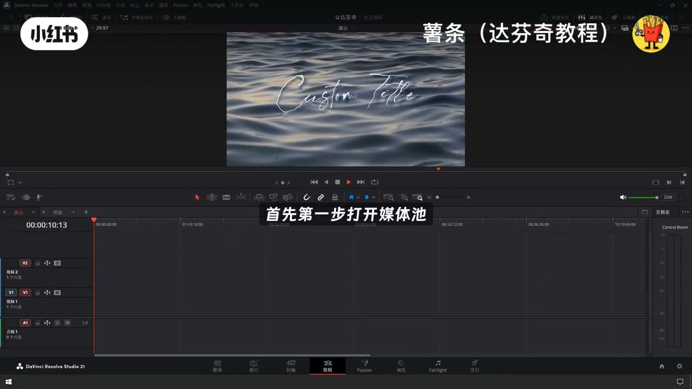
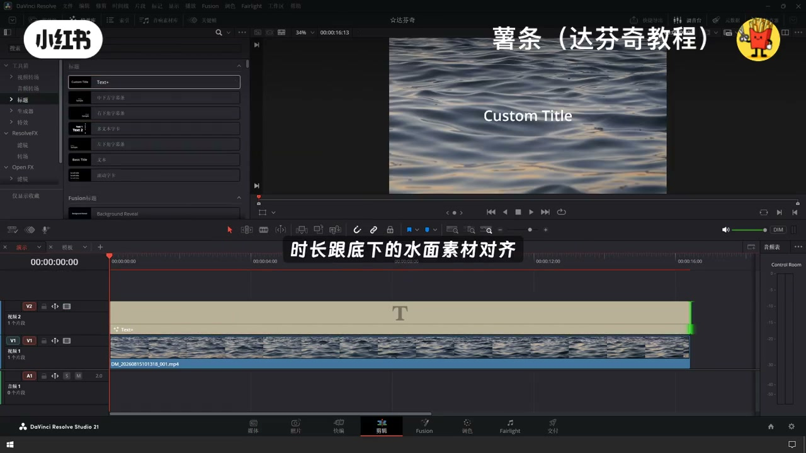
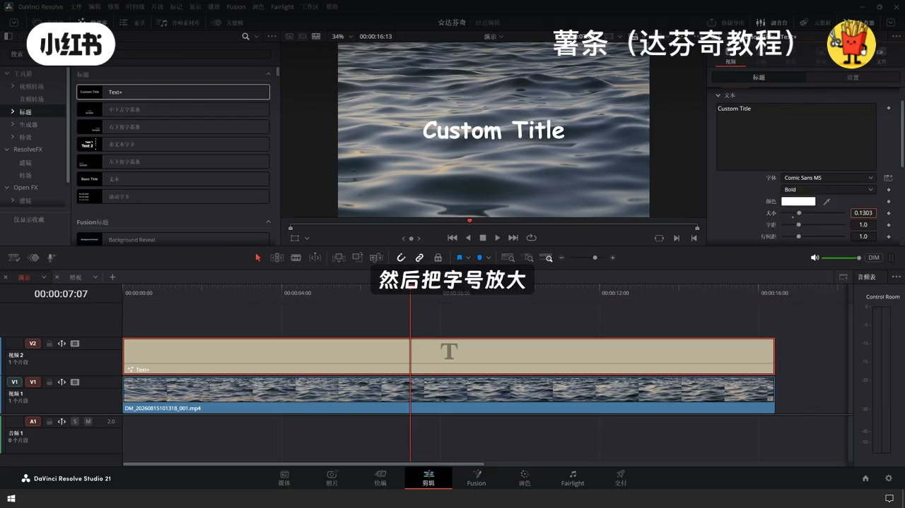
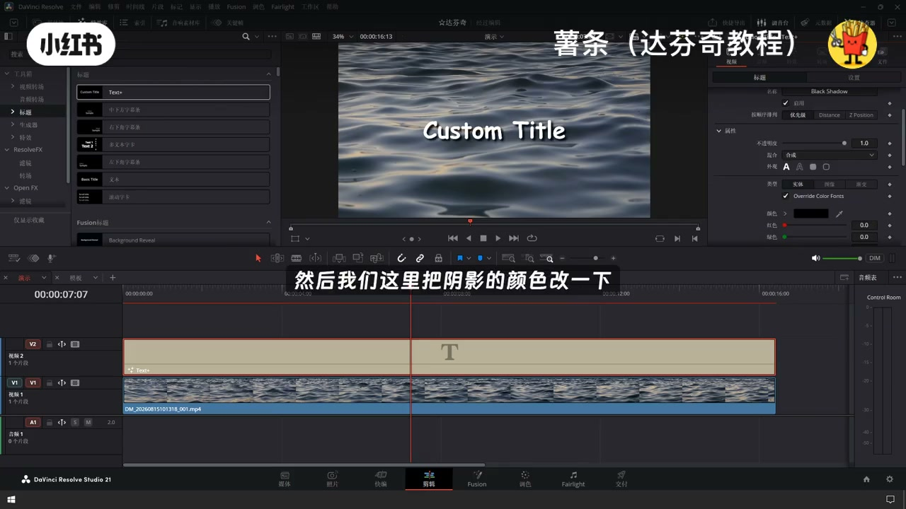
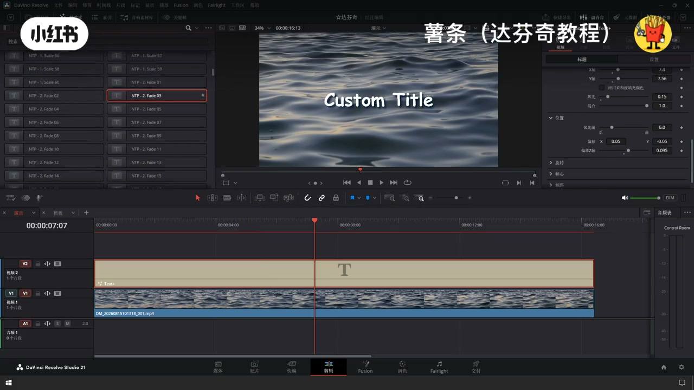
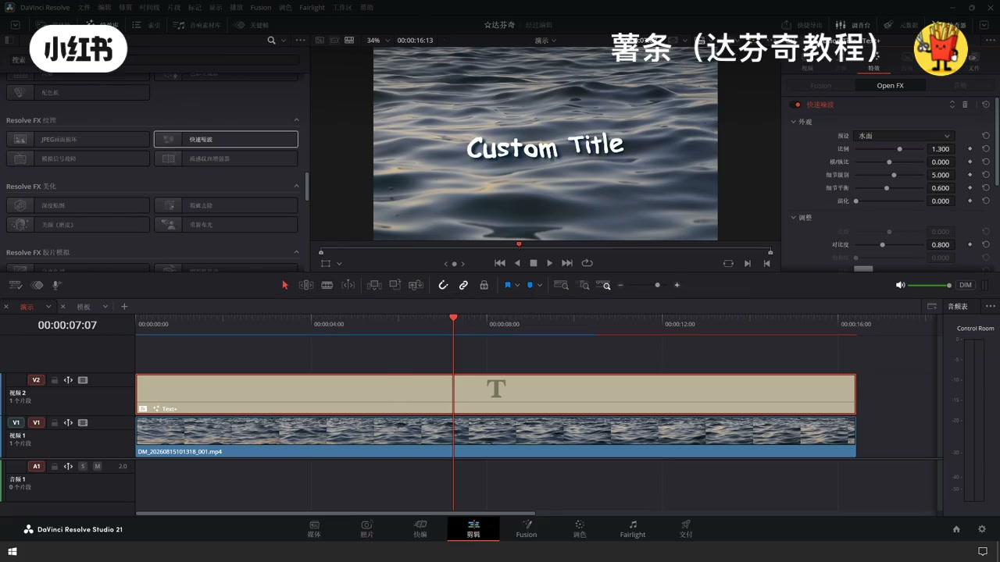
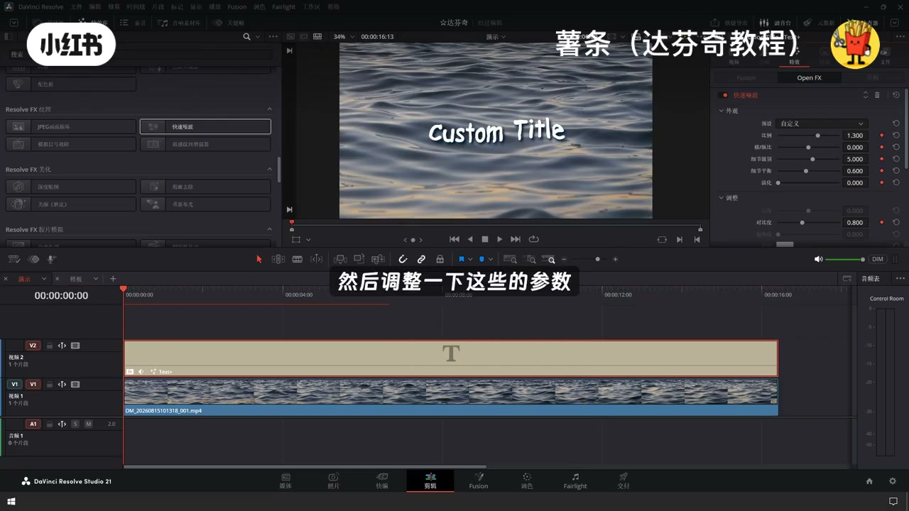
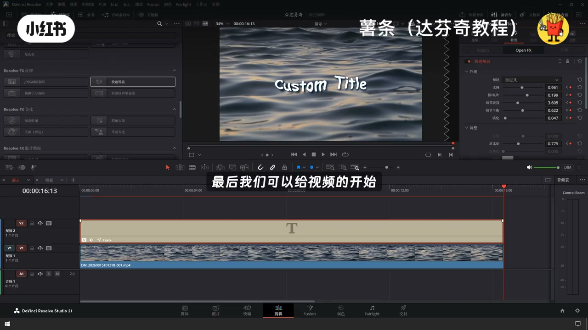

内容要点
「达芬奇水波文字水面漂浮文字动画制作教程」教程要点：今天教大家在达奔起里面 → 如何做出这种漂浮在水面上的水波文字的效果 → 首先第一步打开媒体池 → 拨入我们的水面素材到第一条视频轨道上…
知识结构
今天教大家在达奔起里面
接着我们找到着色面板
控制它的效果
- 今天教大家在达奔起里面
- 如何做出这种漂浮在水面上的水波文字的效果
- 首先第一步打开媒体池
- 拨入我们的水面素材到第一条视频轨道上
- 接着打开特效库
今天教大家在达奔起里面
00:00–00:45今天教大家在达奔起里面
今天教大家在达奔起里面；如何做出这种漂浮在水面上的水波文字的效果；首先第一步打开媒体池；拨入我们的水面素材到第一条视频轨道上；接着打开特效库；在标题这一栏里面；添加第一个文本；放在我们的第二条轨道上；把文字片段拉长；时长跟底下的水面素材对齐；接着我们选中这个文本；进入检查器面板；调整一个自己想要的字体；把字号放大；调整一下文字的位置


00:45–01:34接着我们找到着色面板
接着我们找到着色面板；点击第三个选项；选择开启；第三个选项是阴影的预设；然后我们这里把阴影的颜色改一下；改成跟水面的颜色相近；我们再调整一下柔和度；接着我们在特效库里面；去找快速照播；互动给这个文字；接着在这个检查器面板里面；把这个预设修改成水面；现在我们文字已经初步出现了；扭曲流动的效果；我们可以通过调整这里的参数


01:34–02:09控制它的效果
控制它的效果；并且每个参数都是可以打关键针的；这样很方便我们呼吸制作动画；现在我在视频的第一针；打上一个关键针；然后调整一下这些的参数；然后再先到视频的最后一针；再调整这些参数；这样两个关键针之间；照播就会自动产生变化的动画；最后我们可以给视频的开头；加一个弹幕弹出的效果；这样一个氛围感；满满的水波文字效果就做好了




口述/画面要点（40段）
结合 Whisper medium 与画面大字整理；专有名词已校对。
今天教大家在达奔起里面
如何做出这种漂浮在水面上的水波文字的效果
首先第一步打开媒体池
拨入我们的水面素材到第一条视频轨道上
接着打开特效库
在标题这一栏里面
添加第一个文本
放在我们的第二条轨道上
把文字片段拉长
时长跟底下的水面素材对齐
接着我们选中这个文本
进入检查器面板
调整一个自己想要的字体
把字号放大
调整一下文字的位置
接着我们找到着色面板
点击第三个选项
选择开启
第三个选项是阴影的预设
然后我们这里把阴影的颜色改一下
改成跟水面的颜色相近
我们再调整一下柔和度
接着我们在特效库里面
去找快速照播
互动给这个文字
接着在这个检查器面板里面
把这个预设修改成水面
现在我们文字已经初步出现了
扭曲流动的效果
我们可以通过调整这里的参数
控制它的效果
并且每个参数都是可以打关键针的
这样很方便我们呼吸制作动画
现在我在视频的第一针
打上一个关键针
然后调整一下这些的参数
然后再先到视频的最后一针
再调整这些参数
这样两个关键针之间
照播就会自动产生变化的动画